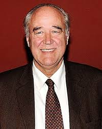
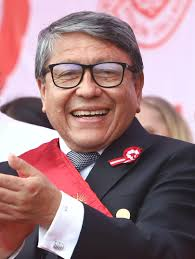
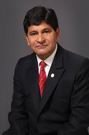
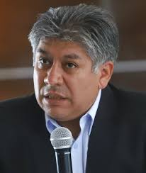
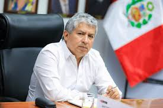
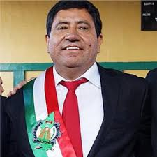
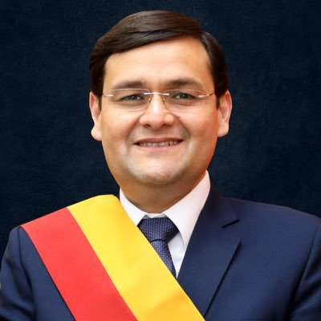

| Nombre | Partido | Foto | Dedicacion |
|---|---|---|---|
| César Acuña Peralta | Alianza para el Progreso |  |
Empresario y Gestión Regional |
| Víctor Andrés García Belaunde | Acción Popular |  |
Diplomacia y Legislación |
| Ciro Castillo Rojo | Más Callao |  |
Médico Cirujano y Salud Pública |
| Rohel Sánchez Sánchez | Alianza Regional |  |
Academia y Descentralización |
| Werner Salcedo Álvarez | Alianza Regional |  |
Ingeniería y Desarrollo Rural |
| Zulema Tomás Gonzales | Independiente | Políticas de Salud Pública | |
| Luis Gamarra Alor | Movimiento Regional | Infraestructura y Proyectos | |
| Antonio Pulgar Lucas | Mi Buen Vecino |  |
Derecho y Desarrollo Amazónico |
| Gilmer Horna Corrales | Sentimiento Amazonense |  |
Turismo y Conectividad |
| Jorge Pérez Flores | Somos Perú |  |
Gestión Hospitalaria |